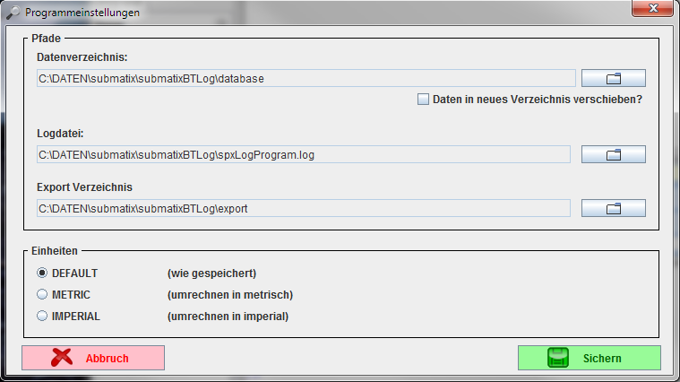
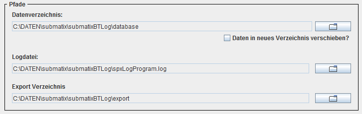
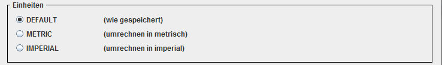

Der Optionen Dialog
Dieser Dialog ist für grundsätzliche Einstellungen im Programm zuständig.
Er ist nur im "offline" Modus des Programmes, d.h. ohne Verbindung zum
SPX42 erreichbar.

Der Optionen Dialog
Der Bereich "Pfade"

Der Optionen Dialog
In diesem Bereich wird festgelegt, wo das Programm seine Daten speichert.
Das "Datenverzeichnis" ist der Ort, wo die interne Datenbank (eine komplette
SQL Datenbank) ihre Dateien speichert. Dort werden alle Informationen zu Geräten
und Logdaten abgelegt.
Das Verzeichnis für die "Logdatei" ist der Ort, wo das Programm Informationen,
welche die Arbeit des Programmes dokumentieren ablegt. Der Umfang der Daten,
welche dort abgelegt werden ist abhängig vom
Parameter "--loglevel"
Das Verzeichnis "Export Verzeichnis" ist der Ort, an dem Dateien, die beim
Export im Dateimanager erzeugt werden
abglegelgt werden.
zum Inhalt
Der Bereich "Einheiten"

Der Bereich Einheiten
Hier gibt es drei Möglichkeiten:
1. DEFAULT
Die Maßeinheiten werden so wie vom SPX42 gespeichert angezeigt.
2. METRIC
Die Maßeinheiten werden grundsätzlich metrisch angezeigt und wenn notwendig dafür umgerechnet.
3. IMPERIAL
Die Maßeinheiten werden grundsätzlich imperial angezeigt und wenn notwendig dafür umgerechnet.
zum Inhalt